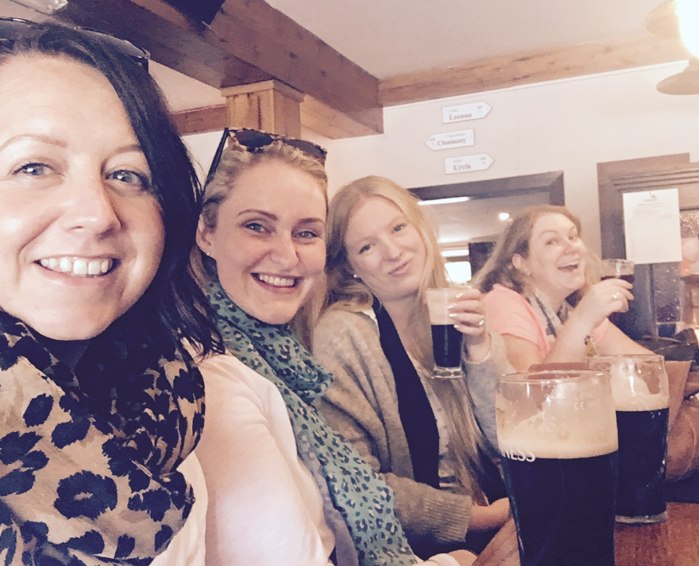

Ireland, or the Emerald Isle as it's also known is partitioned into two parts; Northern Ireland which is part of the United Kingdom, and Republic of Ireland which occupies five-sixths of Ireland. As a whole, there are beautiful rural areas and some thriving cities to discover. My trip took me to the county of Donegal which is very rural which I will talk to you about in this post. I went there with friends and family for a week and we had Plenty 'O Craic. The places I visited were Giants Causeway, Bushmills, Whiskey Distillery, and Clonmany Festival.
From the UK flights from all the main budget and main airlines fly into the various airports in Northern and Republic Of Ireland, I flew into Belfast from Heathrow. Flights from the UK are fairly prices, and you may be able to pick up a bargain if you plan ahead. Flight time's are 40 minutes to an hour depending where you are flying from and into. Other ways you can get to Ireland from the UK is by Ferry, so if you want to roadtrip the journey and have time on your side, this is another way you can get across.
I stayed in the county of Donegal for the week and because me and my friends were wanting to get out and see places, we hired a car that we picked up from Belfast International Airport and costed in at £160 for the week. Also there are frequent bus and train services to get you around however, if you are staying in a very rural area, this will take some planning and if you can hire a car, it would be advisable just so that you can get out and about easily as there are lots of really great places to see.
Donegal is a county in the Republic of Ireland and therefore is associated with the southern part of Ireland but it's actually the most northern county (out of all 32 counties) in the whole of Ireland. You don't need a Visa or a tetanus shot to visit Donegal but you do need to take Euro's with you which is the currency, and if you use your mobile over there, you are classed as in international waters so you may want to un-install your Pokemon Go app as it will cost you...lots! It also has 3 Peninsulars (Inishowen, Fanad and Rosguill) which for those who don't know, a Peninsular is a piece of land that is bordered by water on three sides but connected to mainland. Every day is a school day! I enjoyed my trip over to Ireland lots. Partly because I went over there with a group of friends and we just had the best time together, but also because of how green it is once you're in the countryside. And with that also comes with being more "Off The Grid" in terms of wifi and mobile signal. So for anyone wanting to relax, de-stress and breath in some fresh air, it is certainly the place for that. And it's only an hour on a plane from home too.
Every year, the town of Clonmany have a week long Festival and it just so happens that the week I was there, it was on! The festival attracts not only local communities but visitors from far and wide. The organisers pack in a week of events all day and evening in different locations around the town, with family fun, a funfair and live music for all to enjoy.
Ballyliffin is a small town in a rural setting and perfect for getting away from fast-paced life. It's right on the coastline and it has an extensive sandy beach perfect for afternoon walks or pebble throwing competitions with friends. Alot of people come to Ballyliffin for holidays and it's very popular for hosting weddings. There are a couple of hotels Ballyliffin Lodge and The Strand Hotel in the town that are popular for locals lunching and wohoo they have free wifi!

This is a National Trust heritage site and quite understandably so as it is named as the fourth greatest natural wonders in the United Kingdom, and it is the most popular tourist attractions in Northern Ireland. Giant's Causeway is an area that has 40,000 interlocking basalt columns which is the result of a volcanic eruption. The tops of the columns form stepping stones that lead from the cliff foot and disappear under the sea. Most of the columns are hexagonal, although there are also some with four, five, seven or eight sides. The tallest being about 12 metres in height. Legend has it that the columns are actually the remains of a causeway built by a giant. The story goes that the Irish giant Fionn mac Cumhaill (Finn MacCool), from the fenian Cycle of Gaelic mythology, was challenged to a fight by the Scottish giant Benandonner. Fionn accepted the challenge and built the causeway across the North Channel so that the two giants could meet. Whether formed from a Volcanic eruption or as the Legend tells it, it is truly a remarkable place to see and I was blown away by what an amazing site it is.

Along with Rugby, Guinness and Potatoes, Ireland is famous for Whiskey so the girls and I (with designated driver) headed over to the town of Bushmills to visit the famous distillery. For 7.50e we were given a free mini Bushmills Honey Whiskey to take home, a tour of the distillery, and a free Whiskey to drink there and then from the Bushmills bar at the end so well worth the money. I must say, as a none Malt Whiskey drinker (but like the idea of relaxing with a single malt by the fire on a cold evening), I kept an open mind because with like most things that have a particular flavour (smelly blue cheese being one of them), it can't be all that bad and there must just be a technique to enjoying the flavour, right? The tour guide was great and kept everything interesting and humourous throughout the 30-40 minute tour, and talked the group through how best to drink Bushmills whiskey as intended. I knew it....I had been drinking it all wrong all along, and the wrong kind of whiskey clearly. My trip to Bushmills made me a Whiskey snob. Only a minimum of a 12 year aged whiskey will do now. If only my bank account has unlimited funds.
Back to top of page